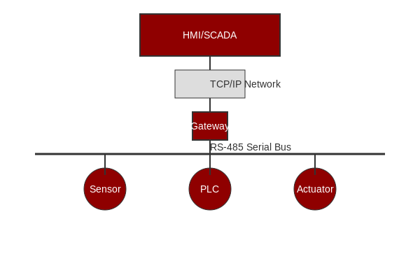

MODBUS is a communication protocol developed by Modicon in 1979 for use with its programmable logic controllers (PLCs). It has become a de facto standard communication protocol and is now commonly available for connecting industrial electronic devices.
The MODBUS protocol has three main variants, each with specific characteristics and use cases:
| Feature | MODBUS ASCII | MODBUS RTU | MODBUS TCP/IP |
|---|---|---|---|
| Transmission Mode | ASCII characters | Binary | TCP/IP packets |
| Speed | Slowest | Fast | Fastest (network dependent) |
| Error Checking | LRC (Longitudinal Redundancy Check) | CRC (Cyclic Redundancy Check) | TCP/IP checksums |
| Maximum Devices | 247 | 247 | Unlimited (theoretically) |
| Distance | Up to 1200m | Up to 1200m | Network dependent (global via internet) |
| Typical Use Case | Legacy systems, text-based debugging | Industrial automation (most common) | Networked systems, SCADA |
| Port Requirements | Serial port (RS-232/RS-485) | Serial port (RS-232/RS-485) | Ethernet port (TCP port 502) |
Frame Format: Each byte is sent as two ASCII characters (0-9, A-F)
Start/End: Begins with ':' and ends with CR/LF
Example: :010300000001FB\r\n
Advantages: Human-readable, easy to debug, works well with text terminals
Disadvantages: Inefficient (twice as many bytes as RTU), slower transmission
Frame Format: Binary data (most compact representation)
Start/End: Silent interval of at least 3.5 character times
Example: [01][03][00][00][00][01][84][0A] (hexadecimal bytes)
Advantages: Efficient, fast, widely supported in industrial devices
Disadvantages: Requires precise timing, not human-readable
Frame Format: MODBUS PDU wrapped in TCP/IP packet with MBAP header
Port: Default TCP port 502
Example: [00][01][00][00][00][06][01][03][00][00][00][01]
Advantages: Uses standard network infrastructure, no distance limitations, easy integration with IT systems
Disadvantages: Requires network infrastructure, potential security concerns
MODBUS TCP/IP is essentially the MODBUS RTU protocol with a TCP/IP interface running on Ethernet. The key differences are:
| Transaction ID | Protocol ID | Length | Unit ID | Function Code | Data |
|----------------|-------------|--------|---------|---------------|------|
| 2 bytes | 2 bytes | 2 bytes| 1 byte | 1 byte | N bytes |